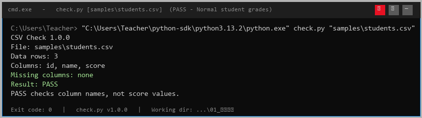
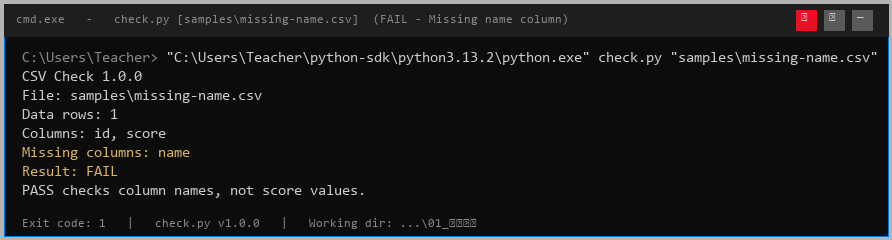
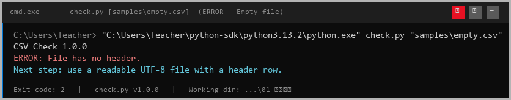
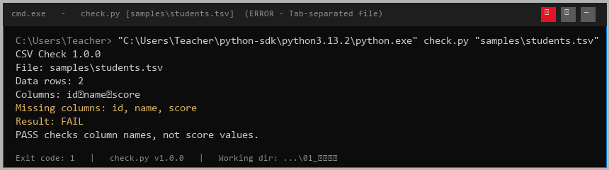

1. 工具概述
CSV Check 是一个面向教学场景的 Python 命令行工具，用于 只读检查 学生成绩单 CSV 文件的格式是否合规。它不会修改原始文件，也不会向任何外部网络发送数据。
工具的核心设计理念是：安全优先、反馈清晰、即查即用。在实际教学中，学生经常因为 CSV 编码错误、Tab/逗号混淆、表头拼写错误等低级问题卡在数据导入环节，这个工具就是为了在写代码之前先帮你"验明正身"。
它能做什么
- ✅ 以
utf-8-sig编码读取文件，自动处理带 BOM 的 Excel 导出 CSV - ✅ 校验表头行是否存在、是否有空列名、是否有重复列名
- ✅ 校验所有数据行的列数是否与表头一致
- ✅ 按需检查必选列（默认
id、name、score） - ✅ 返回三级退出码，方便脚本化集成
它不能做什么
- ❌ 不修改或修复原始 CSV 文件
- ❌ 不校验分数的数值范围（是否在 0–100 之间等）
- ❌ 不做数据类型推断（所有值都当作字符串）
- ❌ 不支持 Excel
.xlsx格式（请先另存为 CSV）
工作流程
CSV 文件
→
UTF-8 读取
→
表头校验
→
必选列检查
→
PASS / FAIL
2. 依赖与环境
运行环境
| 项目 | 要求 |
|---|---|
| Python 版本 | Python 3.8+（已在 3.13.2 验证） |
| 操作系统 | Windows / macOS / Linux |
| 第三方库 | 无 — 仅使用 Python 标准库 |
| 文件编码 | UTF-8（或 UTF-8 with BOM） |
| 文件格式 | 逗号分隔（.csv），每行以换行符结尾 |
项目目录结构
解压后你应该看到如下结构（check.py 和 csvcheck/ 必须在同一目录）：
01_写作练习/ ├── check.py # 主入口脚本 ├── csvcheck/ # 依赖模块包 │ ├── __init__.py # 核心逻辑：inspect_csv() │ └── __main__.py # 备用 CLI 入口 ├── samples/ # 示例文件 │ ├── students.csv # ✅ 正常文件，PASS │ ├── missing-name.csv # ❌ 缺少 name 列 │ ├── empty.csv # ❌ 空文件 │ └── students.tsv # ❌ Tab 分隔非逗号 └── README.md
注意
如果把
check.py 单独拷到别的目录而没有带上 csvcheck/ 文件夹，脚本会报错 ModuleNotFoundError: No module named 'csvcheck'。
3. 快速开始
三条命令跑起来（Windows CMD）：
# ① 进入脚本目录
cd "C:\Users\Teacher\Downloads\发给学生_技术文档写作 (1)\学生实践包\01_写作练习"
# ② 用 Python 运行（路径按实际调整）
"C:\Users\Teacher\python-sdk\python3.13.2\python.exe" check.py samples\students.csv
# ③ 应该看到 PASS 输出如果你已经把 Python 加进了系统 PATH，简化为：
python check.py samples\students.csv
4. 命令行参数详解
工具的完整调用签名：
python check.py <CSV文件路径> [--require COL1 COL2 ...]参数说明
| 参数 | 类型 | 是否必填 | 默认值 | 说明 |
|---|---|---|---|---|
file |
位置参数（字符串） | 是 | — | 待检查的 CSV 文件路径，支持相对路径和绝对路径 |
--require |
可选参数（空格分隔多值） | 否 | id name score |
指定必须存在的列名。区分大小写，列名顺序无关 |
使用示例
示例 1：最简用法（用默认必选列）
python check.py samples\students.csv
# 必选列 = id, name, score示例 2：自定义必选列
python check.py 2026秋季成绩.csv --require 学号 姓名 成绩 班级
# 会检查表头里是否同时包含"学号""姓名""成绩""班级"示例 3：一个必选列都不强制
python check.py data.csv --require
# 只做文件可读取性和表头合法性检查，不检查列名5. 完整操作步骤
-
确认 Python 已安装
在终端运行python --version。如果提示找不到命令，说明要么没装，要么没加入系统 PATH。
你的电脑实际情况：Python 装在C:\Users\Teacher\python-sdk\python3.13.2\python.exe，但没加入 PATH，所以必须用完整路径调用。 -
打开终端（CMD 或 PowerShell）
Windows 11：按 Win 键，输入cmd或PowerShell，回车。 -
切换到脚本所在目录
cd "C:\Users\Teacher\Downloads\发给学生_技术文档写作 (1)\学生实践包\01_写作练习"提示 路径里有中文和空格，所以必须用双引号包起来，否则 CMD 会把空格当参数分隔符。 -
运行检查命令
注意：在 PowerShell 里带空格的可执行文件路径前面要加"C:\Users\Teacher\python-sdk\python3.13.2\python.exe" check.py samples\students.csv&：& "C:\Users\Teacher\python-sdk\python3.13.2\python.exe" check.py samples\students.csv -
查看结果
终端会打印检查报告，同时echo %errorlevel%（CMD）或$LASTEXITCODE（PowerShell）可以查看退出码。
6. 预期输出对照
练习包里预置了 4 个样例 CSV，覆盖了"完美 → 小缺陷 → 大错误 → 完全错误"四种典型场景。以下是每个文件的实际运行结果：
✅ students.csv — PASS
三列
id/name/score 全部齐全，数据行 3 条，Result: PASS，退出码 0⚠️ missing-name.csv — FAIL

只有
id, score 两列，缺 name，Result: FAIL，退出码 1❌ empty.csv — ERROR

文件完全为空，没有表头行。工具直接抛
CsvCheckError，退出码 2❌ students.tsv — ERROR（Tab 分隔）

扩展名虽为 .tsv 但被当作 .csv 读取，分隔符不匹配导致解析失败，退出码 1
字段含义
| 输出字段 | 含义 |
|---|---|
CSV Check X.Y.Z | 工具版本号，方便汇报时说清楚"你用的是哪个版本" |
File: ... | 实际被检查的文件路径（原样回显你传入的参数） |
Data rows: N | 数据行数 = 总行数 − 表头行 − 空行。不包括表头！ |
Columns: a, b, c | 从 CSV 表头读出来的全部列名 |
Missing columns: name | --require 指定了但表头里没找到的列名；如果全齐就显示 none |
Result: PASS / FAIL | PASS = 所有必选列都齐；FAIL = 有缺失 |
7. 退出码说明
脚本通过 sys.exit(code) 返回不同的整数退出码，方便在批处理或 CI 流水线中做分支判断：
| 退出码 | 状态 | 含义 | 下一步操作 |
|---|---|---|---|
| 0 | PASS | 文件完全合格，可以放心使用 | 进入下一步数据处理 |
| 1 | FAIL | 文件能读，但表头缺少 --require 指定的必选列 |
打开 CSV 补全缺失的列名（或用 --require 调整必选列） |
| 2 | ERROR | 文件本身无法读取或格式严重异常 | 检查编码（必须 UTF-8）、分隔符（必须逗号）、表头是否存在 |
在脚本中使用
#!/bin/bash
# 批处理示例
python check.py grades.csv
case $? in
0) echo "✅ 通过，开始导入数据" ;;
1) echo "⚠️ 缺列，请补全表头" ;;
2) echo "❌ 文件损坏，请检查编码" ;;
esac8. 故障排查
遇到问题先对照下面的症状找药方，90% 的坑都在这里了。
症状 A：python 不是内部或外部命令
原因
Python 没有加入系统 PATH。Windows 上常见的情况是装了 Python 但忘了勾选 "Add Python to PATH"，或者用的是微软应用商店的引导程序。
解决：
- 先找到 Python 实际装在哪里：
Get-ChildItem -Path "$env:USERPROFILE" -Recurse -Filter "python.exe" -Depth 5 - 用完整路径调用（临时方案）：
"C:\Users\Teacher\python-sdk\python3.13.2\python.exe" check.py samples\students.csv - 永久加到 PATH（推荐）：
# PowerShell，当前用户永久生效 [Environment]::SetEnvironmentVariable("Path", "C:\Users\Teacher\python-sdk\python3.13.2;" + [Environment]::GetEnvironmentVariable("Path", "User"), "User") # 关掉终端，重新打开后生效
症状 B：ModuleNotFoundError: No module named 'csvcheck'
原因
check.py 和 csvcheck/ 不在同一目录，或者当前工作目录不对。
解决：确认目录结构，cd 到正确位置：
# 先看当前目录对不对
dir
# 应该能看到 check.py 和 csvcheck 文件夹症状 C：ERROR: File has no header.
原因
文件完全是空的，或者只有空行，或者第一行就是数据（没有表头）。
解决：用记事本或 Excel 打开，确保 第一行是列名，例如 id,name,score，然后另存为 CSV（UTF-8） 格式。
症状 D：ERROR: Cannot read a UTF-8 CSV file
原因
文件不是逗号分隔（可能是 Tab、分号），或者编码不是 UTF-8（GBK 等），或者某行列数不一致。
解决：
- 用记事本打开，看列之间是
,还是\t（Tab）。如果是 Tab，在 Excel 里"数据 → 分列 → 分隔符选 Tab"，然后另存为 CSV。 - 如果是中文乱码，用记事本"文件 → 另存为 → 编码选 UTF-8 → 保存"。
- 如果报 "Row N has X fields; expected Y"，说明第 N 行列数和表头对不上，检查该行有没有多/少逗号。
症状 E：脚本运行后什么输出都没有
原因
多半是 Python 调用了"假入口"——Windows 应用商店的引导程序会让命令看起来执行了但实际什么都不做。
解决：
# 先验证 python 是否真的存在
python --version
# 如果没版本号，说明是假入口，用完整路径调用症状 F：PowerShell 里路径含空格报语法错误
解决：在 PowerShell 中，含空格的可执行文件路径前必须加 & 调用运算符：
& "C:\Program Files\MyPython\python.exe" check.py file.csv
终极救命命令
如果还是搞不定，把完整错误信息贴给同学或老师，用这条命令把输出全部抓下来：
& "完整python路径" check.py 文件.csv 2&1 | Tee-Object -FilePath debug.txtdebug.txt。
9. 源码结构
工具由两个文件组成，职责分离清晰：
check.py — CLI 入口
负责解析命令行参数、调用 inspect_csv()、格式化输出、返回退出码。核心逻辑只有 26 行。
import argparse
import sys
from csvcheck import inspect_csv, CsvCheckError, __version__
def main():
parser = argparse.ArgumentParser(...)
parser.add_argument("file", ...)
parser.add_argument("--require", ...)
args = parser.parse_args()
report = inspect_csv(args.file, args.require) # 委托给模块
return 0 if report["valid"] else 1
if __name__ == "__main__":
sys.exit(main())csvcheck/__init__.py — 核心逻辑
真正干活的地方。inspect_csv(path, required_columns) 返回一个字典：
| 字段 | 类型 | 说明 |
|---|---|---|
columns | List[str] | 表头全部列名 |
row_count | int | 数据行数（不含表头和空行） |
missing_columns | List[str] | 缺失的必选列 |
valid | bool | True = 全部必选列都齐 |
扩展思路
- 想加 分数范围检查？在
inspect_csv()的循环里加一段：if not (0 <= int(row[2]) <= 100): raise ... - 想支持 JSON 输出？
csvcheck/__main__.py里已经有format_report()做这个了，加个--json开关即可。 - 想做 批量检查整个文件夹？把
check.py里的参数从单个file改成nargs='+'，加个循环就完事了。